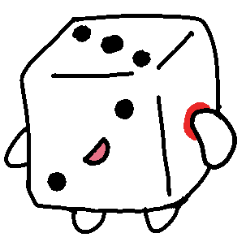

2022年度 幹部紹介

代表
@Charlotte_mhw
2001年、埼玉県ポーランド生まれ。TOEIC900点越えという面白さを持つ。ロケットリーグの大会に出たりもしている生粋のゲーマーで、美味しいご飯、かわいいもの、美しいもの、ゲーム全般が好き。ボドゲ部内でも随一の出目良郎ファン。昨年度は相模原支部長との不仲説が一部で噂されたが、これを真っ向から否定。
2001年、埼玉県ポーランド生まれ。TOEIC900点越えという面白さを持つ。ロケットリーグの大会に出たりもしている生粋のゲーマーで、美味しいご飯、かわいいもの、美しいもの、ゲーム全般が好き。ボドゲ部内でも随一の出目良郎ファン。昨年度は相模原支部長との不仲説が一部で噂されたが、これを真っ向から否定。

副代表
@uesgi800
2003年、不死鳥伝説の土地（新潟県）に生まれる。ゲームとラノベと美味しいご飯とベイブレードと重量級ボドゲをこよなく愛する超ウルトラスーパーハイスペックチワワ。どんなに複雑なボドゲでも驚くほど素早くルールを理解し、初回プレイからきちんと勝ちにくるという天才。加えてものすごくわかりやすくインストを行うことができるという能力を持つ。一人暮らしで自炊の腕も磨き、他の追随を許さないハイスペックチワワの道を着実に歩んでいる。ちなみに得意料理は麻婆豆腐とカルボナーラ。
2003年、不死鳥伝説の土地（新潟県）に生まれる。ゲームとラノベと美味しいご飯とベイブレードと重量級ボドゲをこよなく愛する超ウルトラスーパーハイスペックチワワ。どんなに複雑なボドゲでも驚くほど素早くルールを理解し、初回プレイからきちんと勝ちにくるという天才。加えてものすごくわかりやすくインストを行うことができるという能力を持つ。一人暮らしで自炊の腕も磨き、他の追随を許さないハイスペックチワワの道を着実に歩んでいる。ちなみに得意料理は麻婆豆腐とカルボナーラ。

相模原キャンパス支部 支部長
@ra_mlot
2002年1月、降誕した。現在神奈川県町田市在住。最近はドミニオンとTRPGと筋トレに脳みそを支配されている。そのためまれに街中へドミニオンをやりに行き、サークル実施日でも失踪することがある。2021年ボードゲーム愛好会【お嬢様杯】自称優勝者。このサークルを青ドミにすることを企てている。
2002年1月、降誕した。現在神奈川県町田市在住。最近はドミニオンとTRPGと筋トレに脳みそを支配されている。そのためまれに街中へドミニオンをやりに行き、サークル実施日でも失踪することがある。2021年ボードゲーム愛好会【お嬢様杯】自称優勝者。このサークルを青ドミにすることを企てている。

相模原キャンパス支部 副支部長
@hksb_bdgb
2001年、夏休み真っ只中生まれ。さがキャン支部設立に大きく貢献したボドゲ部員の鑑。支部が設立した後も部員勧誘を頑張っておりボドゲ部員の鑑と噂されている。部内大会ではゲームの種類を問わず事前の練習や研究を怠らず、毎度好成績を残していくボドゲ部員の鑑。プライベートでは密かにボードゲームを値切って購入していたりと、ボドゲ部員の鑑な一面もある。TRPGでカッコつけようとしてファンブルするのが得意。
2001年、夏休み真っ只中生まれ。さがキャン支部設立に大きく貢献したボドゲ部員の鑑。支部が設立した後も部員勧誘を頑張っておりボドゲ部員の鑑と噂されている。部内大会ではゲームの種類を問わず事前の練習や研究を怠らず、毎度好成績を残していくボドゲ部員の鑑。プライベートでは密かにボードゲームを値切って購入していたりと、ボドゲ部員の鑑な一面もある。TRPGでカッコつけようとしてファンブルするのが得意。

出目 良郎
@bodogebu_ Deme Yoshiro
1996年、神奈川県生まれ。1と2と3の面が二面ずつある珍しいサイコロ。直近の仕事はLINEスタンプの撮影。昨年度の文化祭での働きぶりが評価され、今年度は時給が少し上がった。引き続き人気はうなぎのぼり、近々1/10スケールぬいぐるみの発売が予定されているとかいないとか。出目良郎LINEスタンプは現在好評販売中！
1996年、神奈川県生まれ。1と2と3の面が二面ずつある珍しいサイコロ。直近の仕事はLINEスタンプの撮影。昨年度の文化祭での働きぶりが評価され、今年度は時給が少し上がった。引き続き人気はうなぎのぼり、近々1/10スケールぬいぐるみの発売が予定されているとかいないとか。出目良郎LINEスタンプは現在好評販売中！
2021年度 幹部紹介

代表
@bodogebu01
2000年8月、香川県にてうどんを愛することを宿命として爆誕。骨格で青山学院に入学したといわれている。趣味は「それどこでみつけてきたの？」と言われること、最近は暑いのでコーヒーも嗜んでいる。好きなボードゲームはパンデミック、サイズなどの重ゲー。そのうち幹部を引っ張って大会に出たいと考えている。
2000年8月、香川県にてうどんを愛することを宿命として爆誕。骨格で青山学院に入学したといわれている。趣味は「それどこでみつけてきたの？」と言われること、最近は暑いのでコーヒーも嗜んでいる。好きなボードゲームはパンデミック、サイズなどの重ゲー。そのうち幹部を引っ張って大会に出たいと考えている。

副代表
@WwMoz
2000年、神奈川県生まれ。ものづくり、収集、読書、短歌など文化全般が好き。フォントマニアであり、自分の字の綺麗さに飽きてしまい逆に汚い字を練習している。Twitterのトレンド地域を必ずオマーンに設定する習慣があるため、部の共同アカウントでアラビア語のトレンドしか見れないという弊害が起きている。
2000年、神奈川県生まれ。ものづくり、収集、読書、短歌など文化全般が好き。フォントマニアであり、自分の字の綺麗さに飽きてしまい逆に汚い字を練習している。Twitterのトレンド地域を必ずオマーンに設定する習慣があるため、部の共同アカウントでアラビア語のトレンドしか見れないという弊害が起きている。

総務
@bodogebu_somu
2001年、江戸生まれ。星がトレードマーク。好きなものは狐とソーダとパーカー。歩くことが好きでよく美術館や海、夜景などに足を運び、写真を撮っている。副代表と一緒に夜道を散歩しに行くことも多い。ときに詩を書いたり、スマホケースや靴の柄をデザインすることも。ジブリとディズニーを嗜んでいる。
2001年、江戸生まれ。星がトレードマーク。好きなものは狐とソーダとパーカー。歩くことが好きでよく美術館や海、夜景などに足を運び、写真を撮っている。副代表と一緒に夜道を散歩しに行くことも多い。ときに詩を書いたり、スマホケースや靴の柄をデザインすることも。ジブリとディズニーを嗜んでいる。

出目 良郎
@bodogebu_ Deme Yoshiro
1996年、神奈川県生まれ。1と2と3の面が二面ずつある珍しいサイコロのため桃鉄の面接には落ちたが、CoCでは期待の新人と噂された。2020年、神話生物が怖いという理由でCoCダイスを辞職。職を探していたところボドゲ部のマスコットの求人が出ていたので応募してみたら受かった。時給は悪いが、やりがいのある仕事だと感じている。幹部ではない。
1996年、神奈川県生まれ。1と2と3の面が二面ずつある珍しいサイコロのため桃鉄の面接には落ちたが、CoCでは期待の新人と噂された。2020年、神話生物が怖いという理由でCoCダイスを辞職。職を探していたところボドゲ部のマスコットの求人が出ていたので応募してみたら受かった。時給は悪いが、やりがいのある仕事だと感じている。幹部ではない。